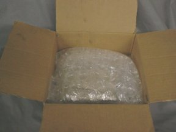

If you have any questions concerning packaging or shipping of your injectors, please feel free to e-mail or call. Thank you.
Injector Packaging 101
| The first step, if you have compressed air available, is to blow out any residual fuel that is remaining in the injector. If you don't have compressed air available, turn the injector inlet-side-down and shake lightly. | |
| Now you are ready to begin packaging the injectors. | |
| Using papertowel or newspaper, wrap each injector individually. This will provide some protection and cushioning for the injectors and will help absorb any residual fuel. |
|
| After wrapping each injector, place them in a "zip-lock" bag and seal the bag. This will help prevent any fumes from escaping the package. (The carriers get very upset when they smell gas fumes.) | |
| Here are the injectors wrapped and sealed in the bag. | |
| Next, using bubblewrap, newspaper, or any other available padding, wrap the bag to further cushion the injectors for shipping. | |
| Here are the injectors wrapped in bubblewrap. | |
| Find a suitable box. It does not need to be a new box; however, it needs to be in good enough condition to survive the trip. I am an advocate of recycling and will normally re-use your box if possible in order to save resources and space in the landfills. |
|
| Using "packing peanuts", bubblewrap, newspaper, shredded paper, or any other suitable padding, place the injectors in the box so that they are secure. |  |
| When properly packaged, the box will be filled and the injectors should not "rattle" around in the box. | |
| Click here and follow the instructions. Include the summary page at the end of the registration process in the box with the injectors. Failure to do this will result in a trip to the woodshed. :) | |
| Seal the box with tape and place a shipping label on the package. Take the package to the shipper of your choice and send it on its way.
If you have any questions concerning packaging or shipping of your injectors, please feel free to e-mail or call. Thank you. | |
Disclaimer: This is not meant to be an all-inclusive instruction manual for packaging injectors. It is only meant to be used as a guide to help ensure that your injectors arrive safe and sound. Failure to properly package your injectors may result in damage during shipment.
Rich Jensen rich@cruzinperformance.com
Ready to ship your injectors for service? Click here.
Click here to return to the fuel injector cleaning main page.
Click here to return to the Cruzin Performance main page.